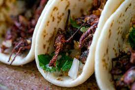

Roasted Cricket Nacho

If you haven’t had the opportunity to try edible insects or roasted crickets before, they have a slightly nutty flavor and really pair well with baked goods, chips, cheeses, etc
Ingredients
- 1 bag of chips
- 1 cup grated cheddar cheese
- 1 jalapeno pepper
- 1 habanero pepper
- 21 sweet pepper
- 1 pack of Cricket Bites: Roasted Original
Steps
- step
- Preheat oven to 400°F.
- step
- Start by slicing your peppers into round slices and remove any seeds.
- step
- Next start layering your nachos. We started with the cheese and choose a few different combinations of peppers, but feel free to play around with them or trying just cheese and crickets too.
- step
- Place your prepared chips on a baking sheet and place in the oven for 5-7 minutes until the cheese is melted. Enjoy!